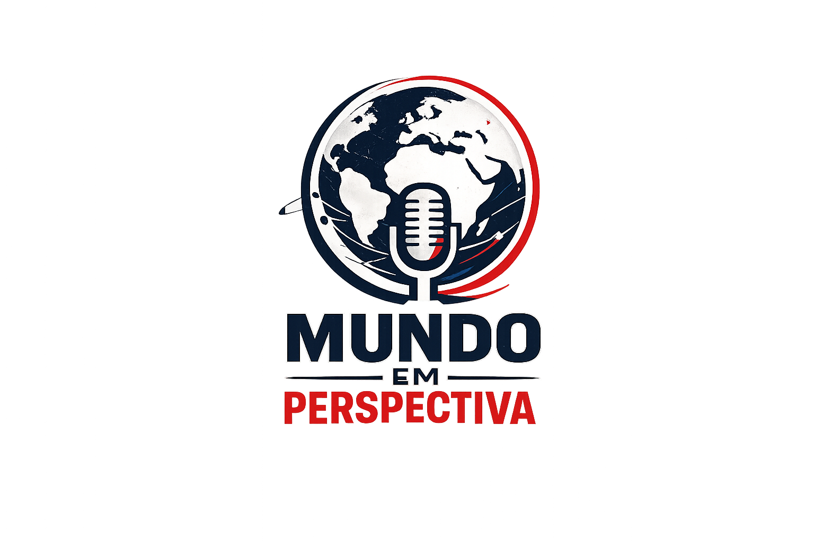
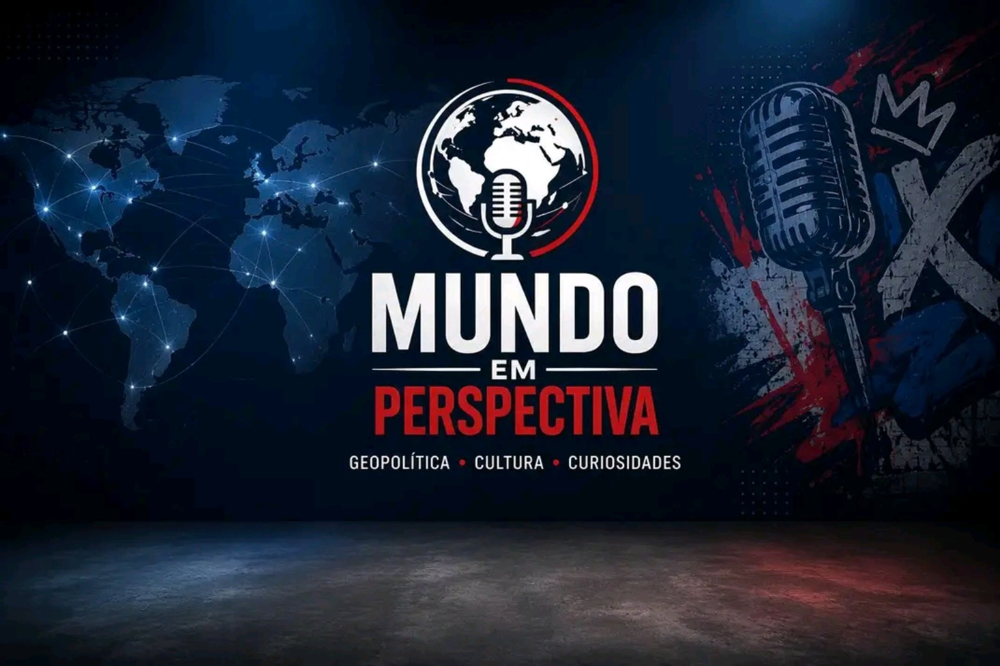

▶
▶
CORTE 01 · YOUTUBE
Veja o primeiro excerto da conversa
Assista ao corte e participe no debate através dos comentários no YouTube.
Ver corte 01 ↗
MUNDO EM PERSPECTIVAPODCAST Subscrever ↗GEOPOLÍTICA • CULTURA • CURIOSIDADES
Um espaço de entrevistas, reflexão e conhecimento para compreender os acontecimentos que marcam Angola, África e o mundo.
O Mundo em Perspectiva Podcast é uma plataforma de comunicação dedicada à partilha de ideias, entrevistas e debates sobre temas de interesse público.
Reunimos especialistas, profissionais e convidados para abordar assuntos ligados à geopolítica, cultura, sociedade, direito, política, educação, economia e actualidade.
O nosso compromisso é promover o diálogo, estimular o pensamento crítico e oferecer ao público diferentes perspectivas sobre o mundo.

DIREITO DO TRABALHO · ANGOLA
Uma conversa com Mestre Vicente Neto, docente universitário e advogado sénior, sobre os direitos laborais, os contratos de trabalho e os desafios na relação entre empregadores e trabalhadores.
DOIS CORTES JÁ PUBLICADOS
▶
Assista ao corte e participe no debate através dos comentários no YouTube.
Ver corte 01 ↗ ▶
SHORTS
▶
SHORTS
Assista, deixe a sua opinião e partilhe este conteúdo com outras pessoas.
Ver corte 02 ↗Até lá, acompanhe os cortes publicados. Subscreva o canal e active as notificações para não perder a estreia.
O episódio completo ainda não está disponível. Esta página será actualizada assim que a entrevista integral for publicada.
Relações internacionais, poder e equilíbrio global.
Identidade, expressão cultural e diversidade.
Cidadania, desafios sociais e vida colectiva.
Direitos, deveres e esclarecimento jurídico.
Governação, desenvolvimento e oportunidades.
Factos, tendências e acontecimentos do mundo.
FAÇA PARTE DA NOSSA COMUNIDADE
Acompanhe os episódios, participe nos debates e ajude o Mundo em Perspectiva Podcast a chegar mais longe.
SUBSCREVER NO YOUTUBE ↗